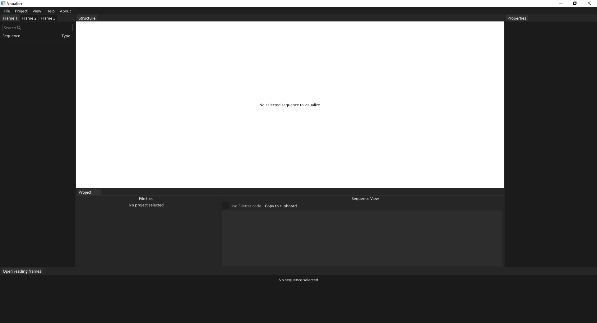
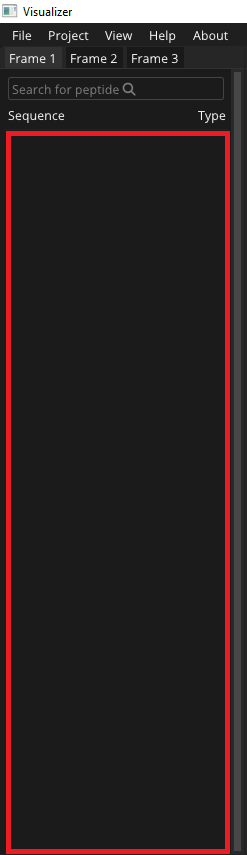
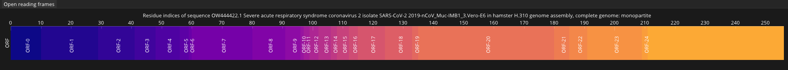
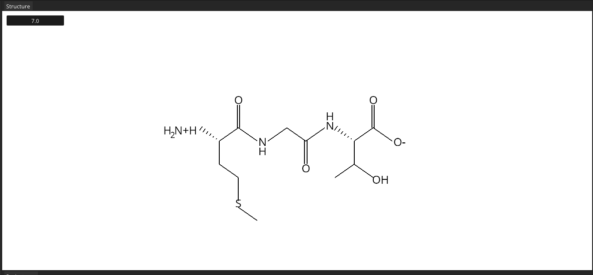

Program został wykonany z myślą o 3 edycji konkursu Motorola Science Cup. Projekt jest z kategorii bioinformatyka.
Program jest aplikacja natywną systemu Windows w formie pliku wykonywalnego. Aby włączyć program, należy uruchomić dołączony plik Wizualizator.exe znajdujacy się katalogu Projekt. Upewnij się, że w folderze, w którym znajduje się program, obecne są również folder "res" i plik biblioteki dynamicznej freetype.dll (powinny one być dołączone, jeśli ich nie ma - pobierz projekt ponownie wraz z nimi. Bez nich uruchomienie programu będzie niemożliwe!).
Program pozwala na tworzenie i wczytywanie projektów. Pliki projektu posiadają rozszerzenie .vis. Tak wygląda program po uruchomieniu:
Przy uruchomieniu programu automatycznie otwiera się pusty projekt. Aby manualnie stworzyć nowy, należy kliknąć File -> New. Jeśli obecnie pracujemy nad projektem który posiada niezapisaną modyfikacje, należy będzie potwierdzić stworzenie nowego projektu. Aby zapisać obecny projekt, należy kliknąć File -> Save as i podać nazwę projektu, lub File -> Save, jeśli zapisujemy istniejący projekt i pracujemy na nim. W celu wczytania istniejacego projektu, należy kliknąć File -> Open i wybrać istniejący projekt (upewnij się, że ma rozszerzenie .vis i byl utworzony w programie).
Program pozwala na tworzenie wielu sekwencji w pojedynczym projekcie. Aby zbadać sekwencje, należy kliknąć jej nazwę za pomocą lewego przycisku myszy. Obecnie badana (wybrana) sekwencja będzie oznaczona kolorem białym, a pozostałe - szarym. W sekwencjach można również wybrać konkretne otwarte ramki odczytu, jeśli istnieją.
Pusty projekt nie zawiera żadnych sekwencji. Aby dodać nową sekwencje ręcznie, należy kliknąć prawym przyciskiem myszy, w jednym z okien ramek (można zmienić okno ramki klikając w jego numer), w przestrzeń hierarchii sekwencji (zaznaczona kolorem czerwonym):
Do wyboru możliwe są 3 rodzaje sekwencji: DNA, RNA i ciąg aminokwasów. Każda kolejno utworzona sekwencja zostanie wyświetlona pod poprzednią. Uracyl jest zamieniany na tyminę w przypadku DNA, a w RNA - tymina na uracyl. Wielkość liter nie ma znaczenia. Wszelkie spacje i niewłaściwe dane są pomijane. Sekwencje można również wczytać z pliku w formacie FASTA. Należy kliknąć w Project -> Import { typ sekwencji } i wybrać interesujący nas plik. Aby usunąć istniejącą sekwencje, należy ją wybrać i kliknąć prawym przyciskiem myszy - pojawi się wtedy opcja usunięcia jej z programu. W przypadku, gdy pracujemy nad konkretnym projektem (jest on zapisany na dysku) można również skorzystać z drzewa plików projektu - File Tree - i przeciągnąć plik sekwencji w formacie na przestrzeń hierarchii sekwencji (zaznaczona kolorem czerwonym). Użytkownik zostanie wtedy poproszony o sposób, w jaki program ma zaimportować plik.
W Sekwencjach DNA i RNA są wyłącznie ilustrowane otwarte ramki odczytu, które zostaną znalezione po translacji kodonów na aminokwasy. W przypadku sekwencji aminokwasów możliwe jest badanie całej sekwencji (kodony STOP zostaną pominięte) lub pojedynczych znalezionych ramek. Aby ilustrować daną sekwencje, należy ją wybrać. Tak wygląda przykładowa wizualizacja otwartych ramek odczytu:
Każda znaleziona ramka jest symbolizowana przez odpowiedni blok o cyklicznie powtarzającym sie kolorze i unikatowym numerze (ORF-0, ORF-1, ..., ORF-n). Numer bloku oznacza numer ramki, która została znaleziona w sekwencji. Wielkość samego bloku jest proporcjonalna do długości znalezionej ramki w stosunku do pozostałych. Im większa jest ramka, tym więsze prawdopodobieństwo, że to rzeczywiste białko. Liczby na osi symbolizują miejsce n-tego aminokwasu w skali całej sekwencji.
Aby przesunąć miejsce wizualizacji, użyj lewego przycisku myszy i przeciągnij.
Aby zwiększyć/zmiejszyć obserwowany odcinek, użyj scroll'a.
Aby wybrać konkretną ramkę (a zatem część sekwencji), klinij w nią prawym przyciskiem myszy
Aby analizować sekwencje lub jej część, należy ją wybrać.
Aby zmienić poziom PH, użyj suwaka z wartością w oknie Structure.
Aby przesunąć miejsce wizualizacji, użyj lewego przycisku myszy i przeciągnij.
Aby zwiększyć/zmiejszyć obserwowany odcinek, użyj scroll'a.
Przykład:
Przykładowe projekty i pliki .FASTA znajdują się w folderze StarterContent w katalogu głównym projektu.
Project został wykonany przez drużynę "Mlekołaki". Autorami są: